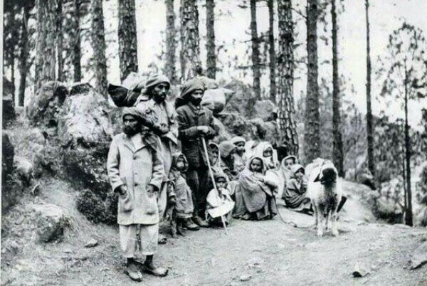

Migration of Jammu Muslims into neighbouring regions


By late November more than three lakh Kashmiri refugees had arrived in the border towns of Sialkot, Gujrat and Jhelum. Over 200,000 Jammu refugees had arrived in Sialkot because of its geographical proximity with Jammu region. The city with a road and railway connection from Jammu was a logical destination for the refugees. Many Kashmiris drew on their because of their pre-existing business and kinship ties. Majority had far less choice except to escape from violence.
The refugee population not surprisingly became the most visible community in the city. The most fortunate occupied properties abandoned by the Hindus and Sikhs. Many others thronged camps, schools and military barracks platforms for many years. They squatted on railway platforms, footpaths and every conceivable space. The least fortunate were accommodated in the 'most appalling', 'de-humanised' and 'like cattle' condition in the evacuee factories. Water and sewerage arrangements were usually non-existent and unhygienic conditions caused health problems. Almost all 20000 Kashmir refugees in Sialkot's Ghanda Singh School caught small-pox.
Refugees recounted gruesome tales of brutal massacres by the state's own troops and the burning of their homes and crops to a party of Englishmen who visited the city on 21 November. The harrowing images and stories of Muslim atrocities were retold in the press as well as in the sermons of Friday Jumma prayer.